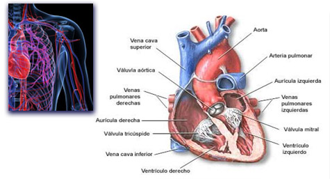

Enfermedades Cardiovasculares

Descripción:
Existen una serie de enfermedades que afectan al sistema cardiovascular, mencionamos aquellas que pueden ser tratadas mediante el biomagnetismo.
Las cardiopatías son las enfermedades del corazón, que pueden ser congénitas (por la estructura misma del corazón); la cardiopatía isquémica que es debida a la mala circulación sanguínea en el propio músculo cardiaco, puede ser ocasionada por exceso de colesterol en las arterias coronarias (ver obesidad). El biomagnetismo ha descubierto que la presencia del tripanosoma cruzi también puede generar este tipo de trastornos.
Angina de pecho , revisar: Estreptococo alfa .
Arterioesclerosis, endurecimiento y estrechamiento de las arterias que impiden la correcta irrigación sanguínea. Ciertos patógenos pueden favorecer esta condición: Chlamydia T .
Ateroesclerosis, reducción de la luz de las arterias y venas a consecuencia de la formación de placa en el interior de las paredes, principalmente formada por grasas (colesterol y triglicéridos).
Las Miocardiopatías son enfermedades del músculo cardiaco en las que se producen alteraciones en la estructura y la función del miocardio en ausencia de enfermedad coronaria, hipertensión, valvulopatías o cardiopatías congénitas que expliquen dichas anomalías. Entre las miocardiopatías, la miocardiopatía dilatada (MCD) se define por la presencia de dilatación y disfunción sistólica que afecta al ventrículo izquierdo o a ambos ventrículos. Estudios actuales indican que varios genes pueden ser los causantes de estas enfermedades, aunque no se descartan factores ambientales, o incluso procesos degenerativos causados por enfermedades autoinmunes o intolerancias alimentarias.
La hipertensión arterial puede ser primaria, cuando se va dando con la edad sin alguna causa específica; o puede ser secundaria, en este caso se puede deber a varias causas como: problemas en riñón, glándulas suprarrenales, tiroides, apnea del sueño, defectos congénitos, medicamentos, abuso de drogas o por ateroesclerosis. Se considera presión arterial norma cuando está por debajo de 80 (diastólica) y 100 (sistólica). Los pares especiales Marimar, Equilibrio cardio pueden ayudar a reducir la presión arterial; además se deben revisar: Estreptococo B , Disfunción del sistema nervioso simpático , Clostridium tetanie , Isaac , Marco Antonio ,
Hipercolesterolemia, o exceso de colesterol en la sangre, es la principal causa de la hipertensión arterial; sobre todo debido a una dieta excedida en grasas saturadas y grasas trans. Revisar los pares: Hepatitis C .
Dislipemia o Dislipidemia consiste en la alteración de los nivles de lípidos en la sangre, principalmente colesterol y triglicéridos. Este término incluye la hiperlipoproteinemia (hiperlipidemia o hiperlipemia), que hace referencia a los niveles elevados de colesterol total, de lipoproteínas de baja densidad (LDL, el colesterol «malo») o de los triglicéridos, así como a una concentración baja de las lipoproteínas de alta densidad (HDL, el colesterol «bueno»). Probar el par: Equilibrio cardio
Enfermedades de la válvula mitral Distintas factores pueden alterar el funcionamiento de la válvula mitral ubicada en el lado izquierdo del corazón, provocando una circulación deficiente de la sangre.
Trastornos genéticos diversos, sobre todo de tipo congénito, pueden causar distintos problemas cardiacos: